创建Jenkins pipeline流水账。
注：本文的例子基于搭建Jenkins集群流水账搭建的集群所写。
注：本文是一个Maven项目流水线的例子。
创建流水线
利用Blueocean创建流水线。
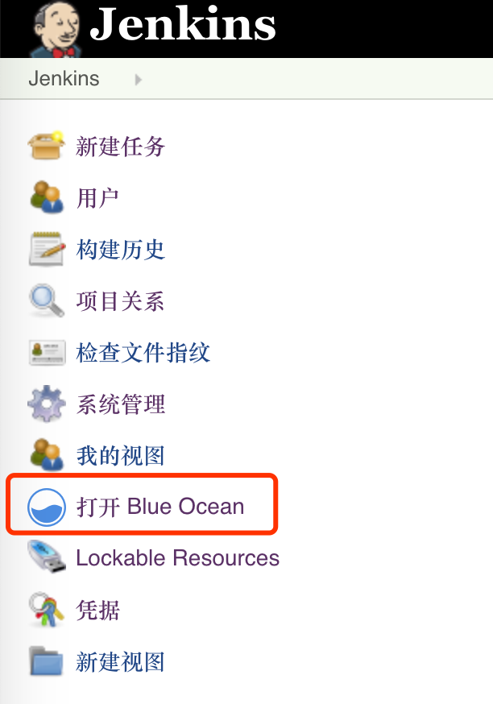
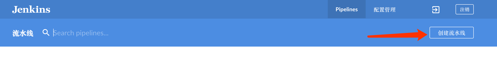
填写GIT仓库信息。
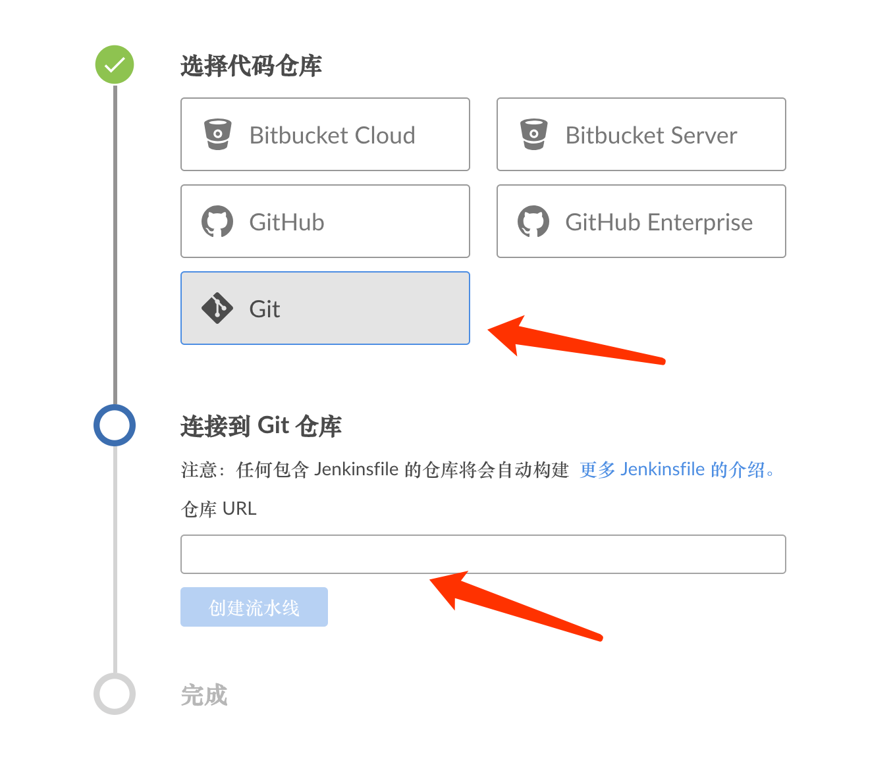
将Blueocean生成的SSH key添加到GIT server里。
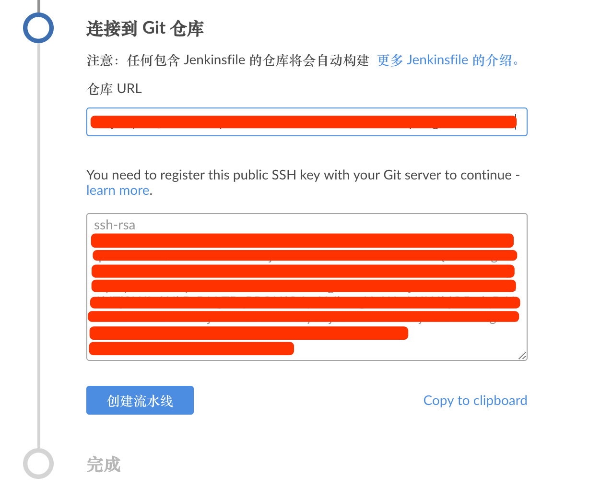
点击创建流水线后Jenkins会拉取GIT仓库，并且尝试寻找存在Jenkinsfile的分支，然后构建。不过不管构建是否成功，都不要管它，我们回到经典页面做进一步配置。
配置Maven settings.xml
我们先配置一下私有Maven仓库的用户名密码。
按照下图的顺序进入凭据管理页面
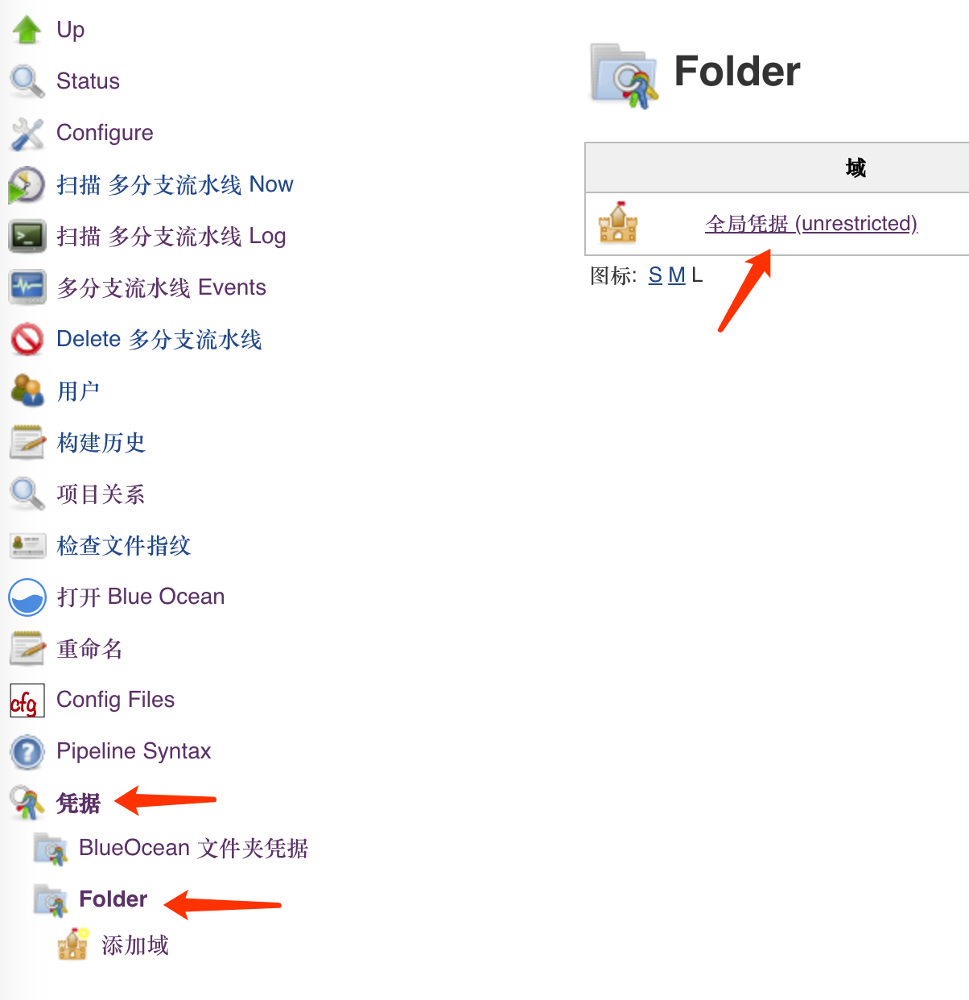
添加凭据

输入用户名密码
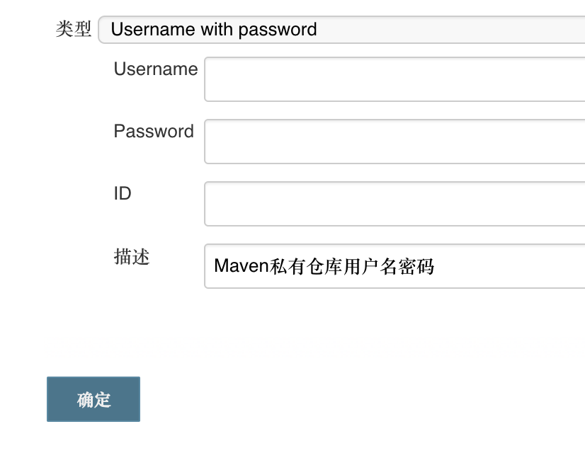
有了用户名密码还不够，还得提供Maven的settings.xml。
进入Config Files管理页面
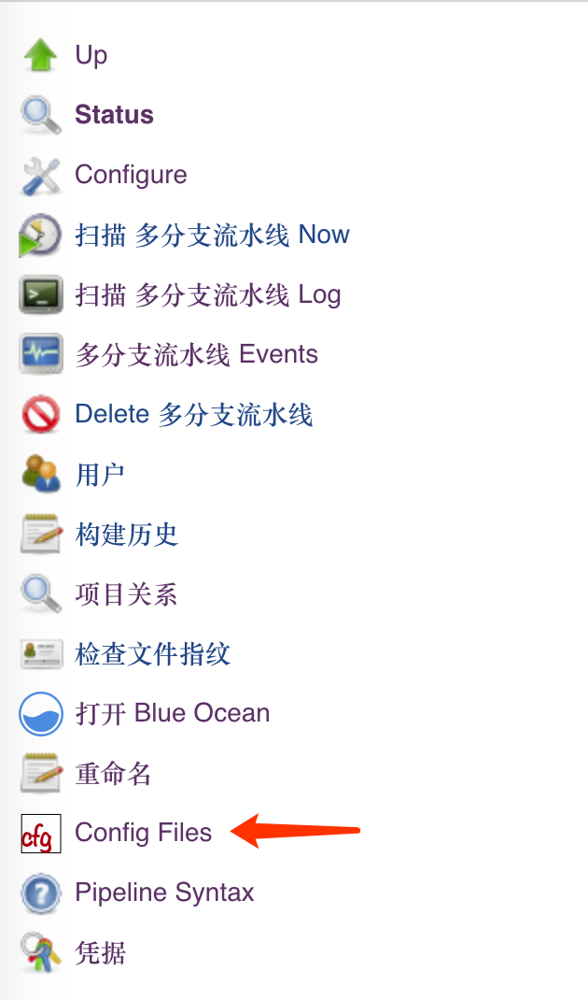
添加新的Config
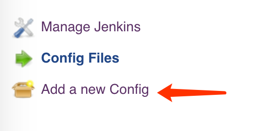
选择Global Maven settings.xml
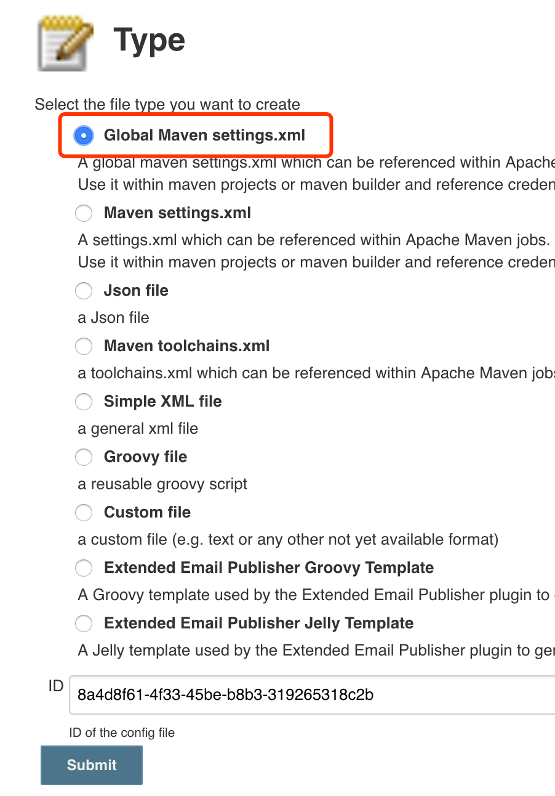
在Server Credentials新增，ServerId填写的是pom.xml里的 project > distributionManagement > repository > id 的值。Credential选择之前创建的凭据。
如果你有多个repository那么就添加多个Server Credential。
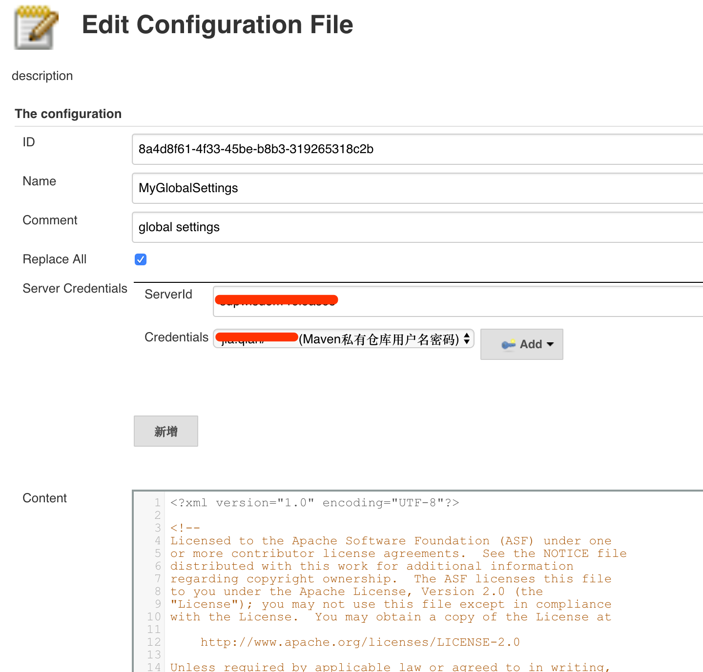
配置流水线
最后还要配置一下流水线，因为默认配置还有点问题。
点击Configure进入配置页面。
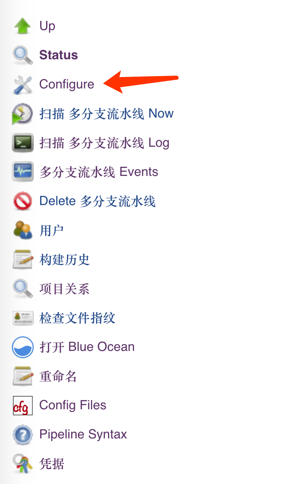
点击分支源Tab，点击Add property，添加“不通过SCM自动化触发”，它的意思是Branch indexing（扫描多分支流水线）不会触发构建。
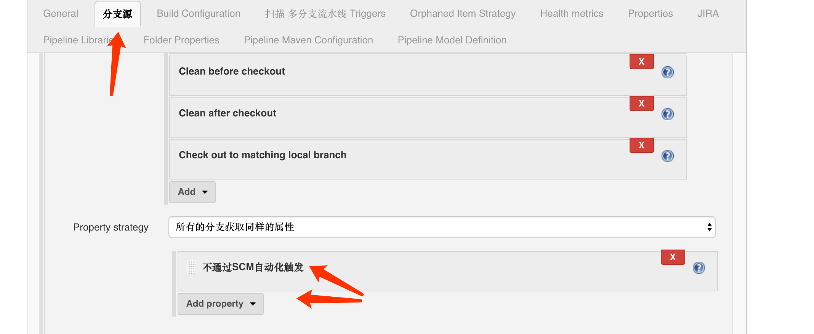
点击“扫描多分支流水线Triggers“Tab，启用Periodically if not otherwise run，Interval选择15分钟，这是为了让该流水线能够感知到分支的删除/新建。
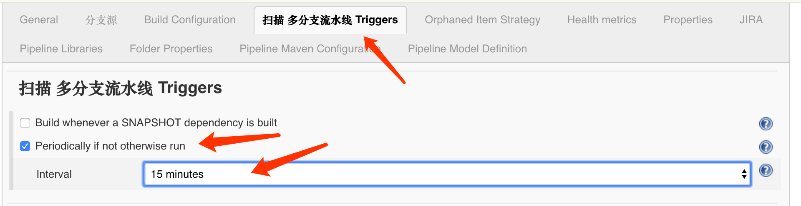
点击“Pipeline Maven Configuration“，配置Global Settings file，选择我们刚刚新建的Config file。

点击“JIRA”，勾选“Enable project-based security“，如下图所示配置。
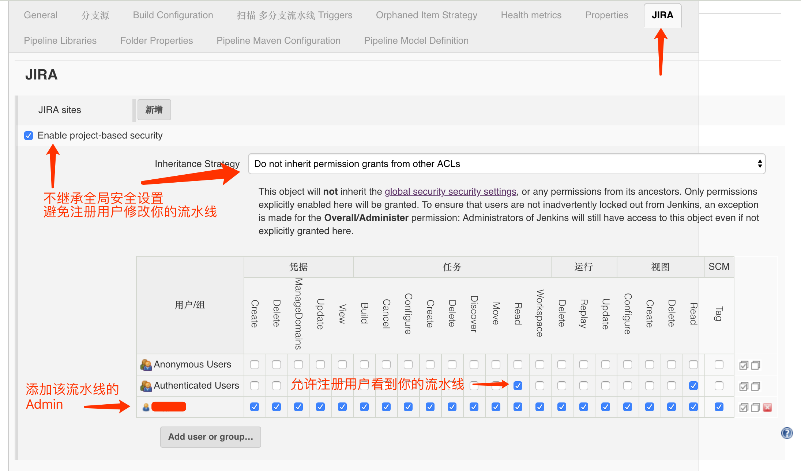
保存。
创建Jenkinsfile
在你的源代码的根目录里创建Jenkinsfile，参考Pipeline文档。然后提交到GIT仓库。
然后点击“扫描多分支流水线Now”。
查看结果
点击打开Blue Ocean
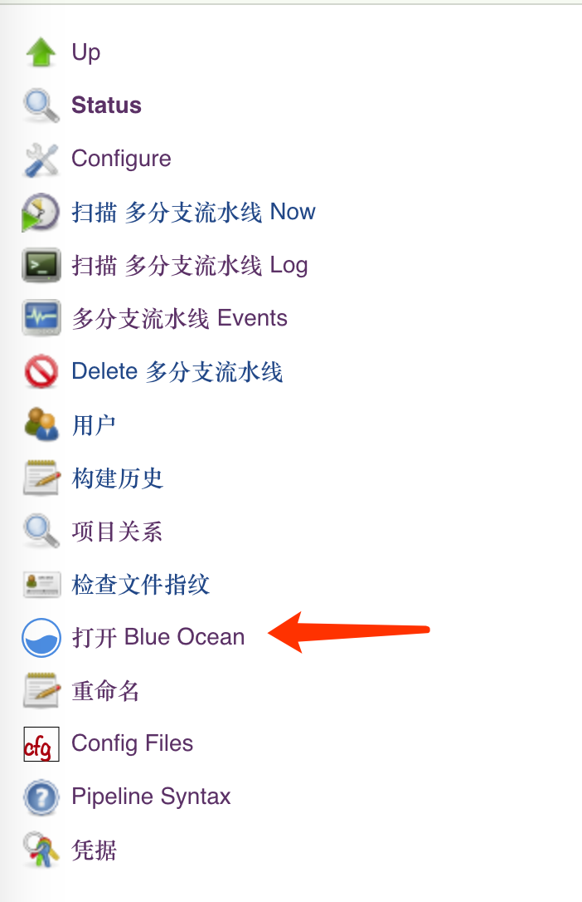
然后就能看到每个分支的构建情况了
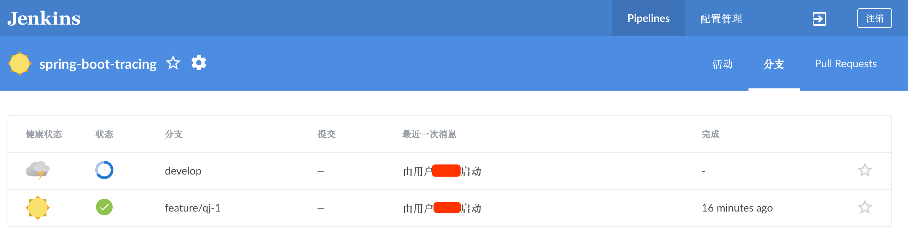